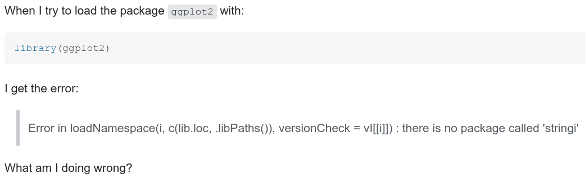

Tips & tricks to get help in any programming language
Marie-Hélène Burle
November 13, 2020
So, you are stuck … now what?
When you are stuck tut
First, look for information that is already out there
Then, ask for help
Look for information
- Read carefully any error message
- Read the documentation (local or online)
- Make sure you have up-to-date versions
- Google (using carefully selected keywords or the error message)
- Look for open issues & bug reports
Error messages
Read them!
Familiarise yourself with the error types in the languages you use
Example: Python’s syntax errors vs exceptions
Warnings ≠ errors
Look for bits you understand (don’t get put off by what you don’t understand)
Identify the locations of the errors to go investigate that part of the code
Documentation
You need to find it
You need to understand it
Finding documentation online
Take the time to look for the official documentation & other high quality sources for the languages & tools you use.
Examples:
Python: Reference manual, Standard library manual, Tutorial
NumPy: Tutorial
R: Open source book “R for Data Science”, Open source book “Advanced R”
Julia: Documentation
Bash: Manual
Git: Manual, Open source book
Finding documentation locally
Understanding the documentation
Up-to-date versions
First, you need to know what needs to be updated.
Keeping a system up to date includes updating:
- the OS
- the program
- (any potential IDE)
- packages
Then, you need to update regularly.
Google’s algorithms are great at guessing what we are looking for.
But there is a frequency problem:
Searches relating to programming-specific questions represent too small a fraction of the overall searches for results to be relevant unless you use key vocabulary.
Be precise.
Learn the vocabulary of your language/tool to know what to search for.
Open issues & bug reports
If the tool you are using is open source, look for issues matching your problem in the source repository (e.g. on GitHub or GitLab).
What if the answer isn’t out there?
When everything has failed & you have to ask for help, you need to know:
Where to ask
How to ask
Where to ask
Q&A sites
Mostly, Stack Overflow & the Stack Exchange network.
Co-founded in 2008 & 2009 by Jeff Atwood & Joel Spolsky.
Forums
Mostly, Discourse.
Co-founded in 2013 by Jeff Atwood, Robin Ward & Sam Saffron.
A few other older forums.
Where to ask
Which one to choose is a matter of personal preference.
Possible considerations:
- Some niche topics have very active communities on Discourse
- Stack Overflow & some older forums can be intimidating with higher expectations for the questions quality & a more direct handling of mistakes
- For conversations, advice, or multiple step questions, go to Discourse
- Stack Overflow has over 13 million users
- Stack Overflow & co have a very efficient approach
Stack Overflow & co
Pick the best site to ask your question.
A few of the Stack Exchange network sites:
Stack Overflow: programming
Super User: computer hardware & software
Unix & Linux: *nix OS TEX: TeX/LaTeX
Cross Validated: stats; data mining, collecting, analysis & visualization; ML
Data Science: focus on implementation & processes
Open Data
GIS
How to ask
Familiarize yourself with the site by reading posts
Read the “Tour” page (SO/SE) or take the “New user tutorial” (Discourse)
Make sure the question has not already been asked
Format the question properly
Give a minimum reproducible example
Do not share sensitive data
Show your attempts
Avoid cross-posting. If you really have to, make sure to cross-reference
How to ask: SO & co
Don’t ask opinion-based questions
Don’t ask for package, tool, or service recommendations
Don’t ask more than one question in a single post
Check your spelling, grammar, punctuation, capitalized sentences, etc.
Avoid greetings, signatures, thank-yous; keep it to the point
Avoid apologies about being a beginner, this being your first post, the question being stupid, etc: do the best you can & skip the personal, self-judgmental & irrelevant bits
Formatting your question
Nowadays, most sites (including Stack Overflow & Discourse) allow markdown rendering.
Some older forums implement other markup languages (e.g. BBCode).
The information is always easy to find. Spend the time to format your question properly. People will be much less inclined to help you if you don’t show any effort & if your question is a nightmare to read.
Example of a typical downvoted question
howdy!!
i am new to R sorry for a very silly question.i looked all oever the itnernwet, but i dint find
anyanswer. i tried to use ggplot i get the error: Error in loadNamespace(i, c(lib.loc, .libPaths()),
versionCheck = vI[[i]]) : there is no package called 'stringi'
thank youu very much!!!!!
marieSame question, fixed
Still not good enough
This question is actually a duplicate of a question asked which is itself a duplicate of another question.
Creating a minimal reproducible example
There are great posts on how to create a good minimal reproducible example. In particular:
How to create a Minimal, Reproducible Example
For R (but concepts apply to any language):
How to make a great R reproducible example
What’s a reproducible example (reprex) and how do I do one?
Creating a minimal reproducible example
- Load all necessary packages
- Load or create necessary data
- Simplify the data & the code as much as possible while still reproducing the problem
- Use simple variable names
Data for your reproducible example: your own data
Do not upload data somewhere on the web to be downloaded.
Make sure that the data is anonymised.
Don’t keep more variables & more data points than are necessary to reproduce the problem.
Simplify the variable names.
In R, you can use functions such as dput() to turn your reduced, anonymised data into text that is easy to copy/paste & can then be used to recreate the data.
Data for your reproducible example: create a toy dataset
You can also create a toy dataset.
Functions that create random data, series, or repetitions are very useful here.
Data for your reproducible example: pre-packaged datasets
Some languages/packages come with pre-packaged datasets. If your code involves such languages/packages, you can make use of these datasets to create your reproducible example.
For example, R comes with many datasets directly available, including iris, mtcars, trees, airquality. In the R console, try:
Additional considerations
Even if you always find answers to your questions without having to post yourself, consider signing up to these sites:
It allows you to upvote (SO/SE) or like (Discourse) the questions & answers that help you—and why not thank in this fashion those that are making your life easier?
It makes you a part of these communities.
Once you are signed up, maybe you will start being more involved & contribute with questions & answers of your own.
A last word
While it takes some work to ask a good question, do not let this discourage you from posting on Stack Overflow: if you ask a good question, you will get many great answers.
You will learn in the process of developing your question (you may actually find the answer in that process) & you will learn from the answers.
It is forth the effort.
Here is the Stack Overflow documentation on how to ask a good question.